Selected findings from the CADI analysis. All changes are measured in People Fed Yearly (PFY) — the number of people a grid cell's caloric output could feed for one year.
Which countries experience the largest aggregate caloric changes — both net and loss-only (ignoring gains within each country).
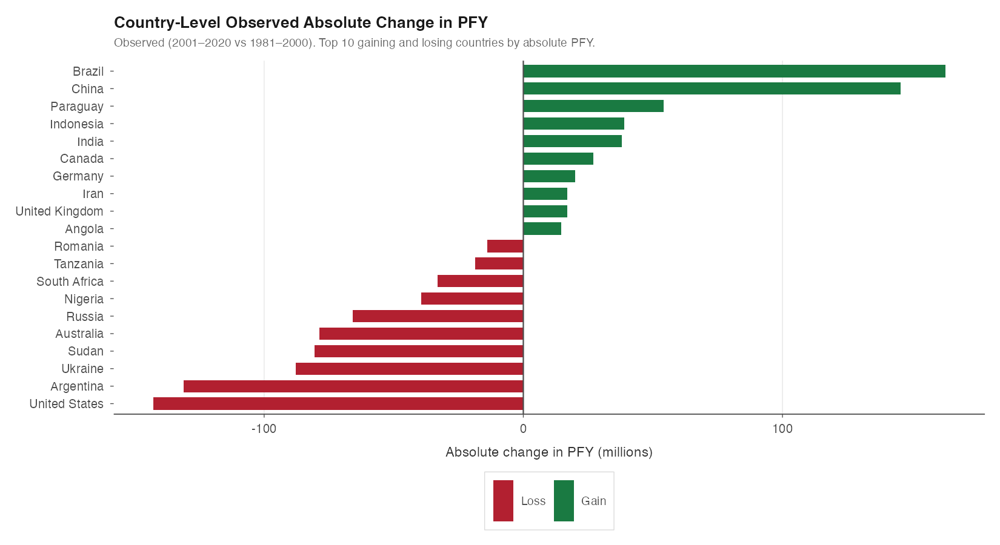
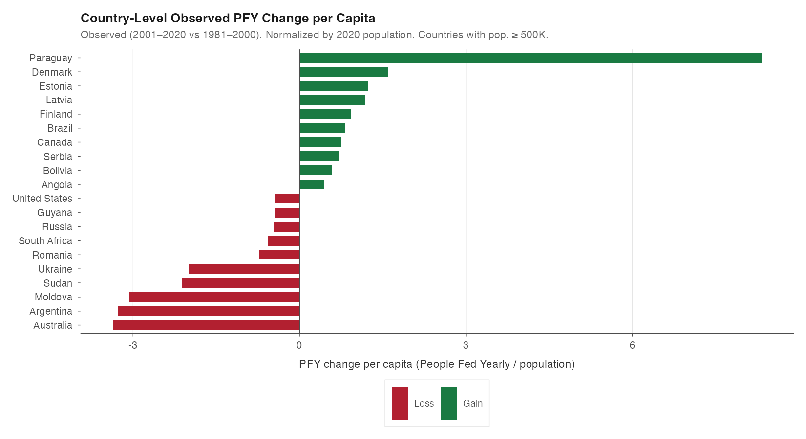
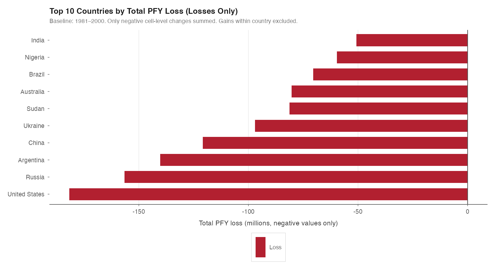
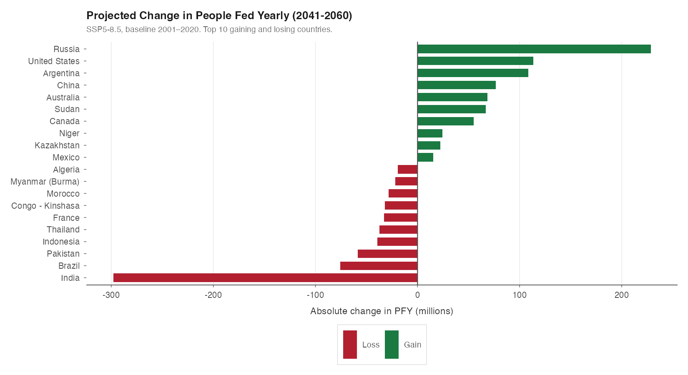
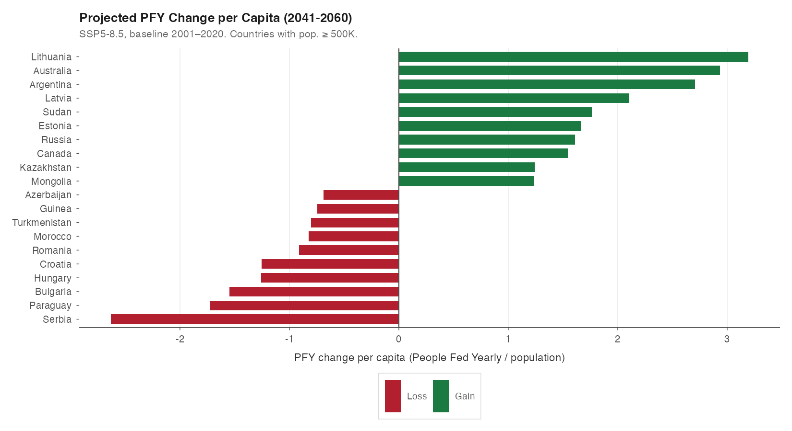
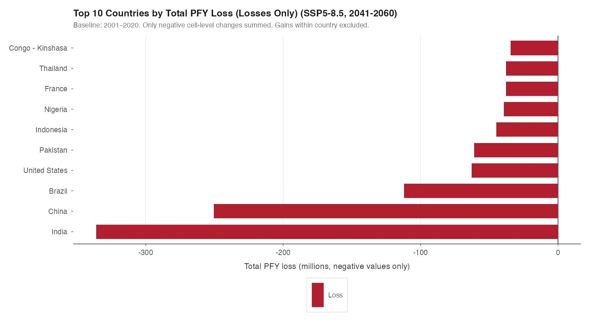
Share of global harvested area experiencing caloric decline at different severity thresholds.
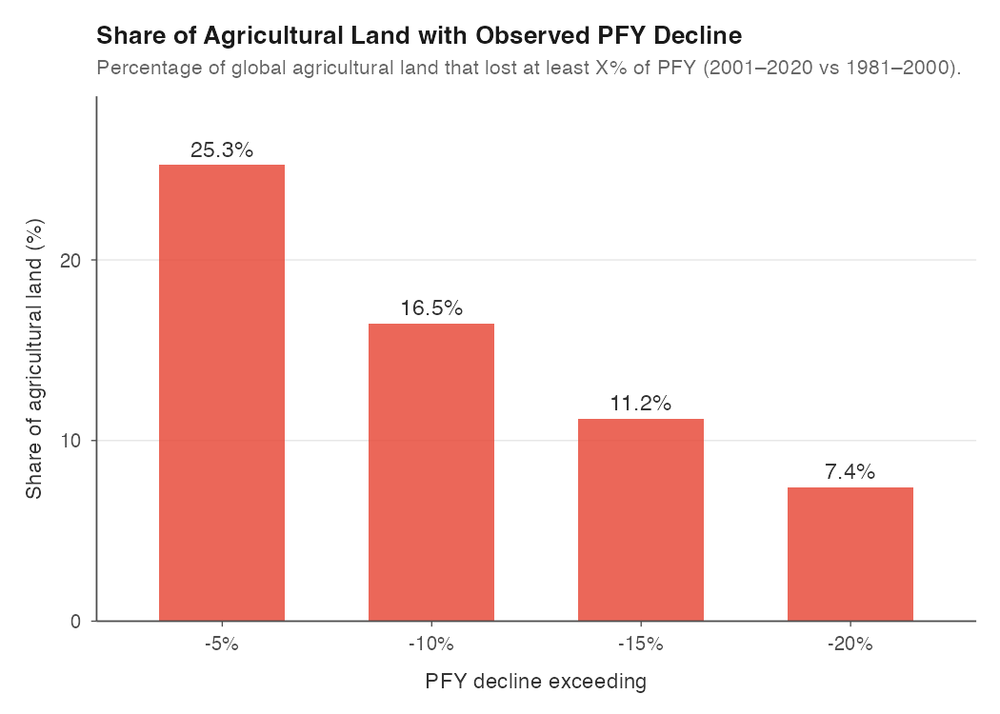
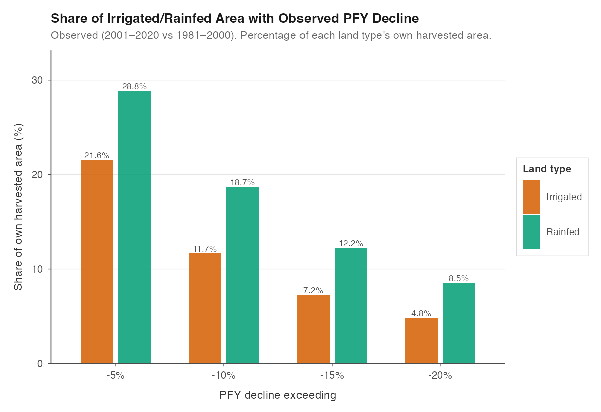
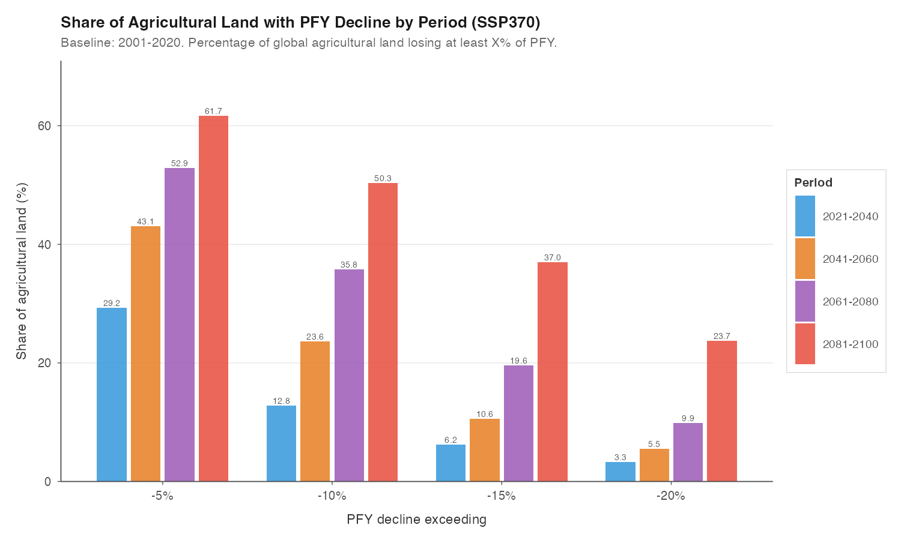
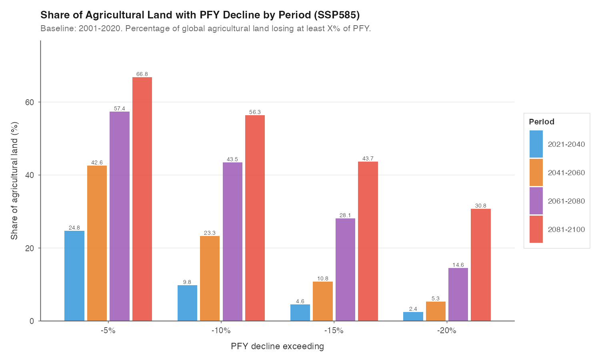
How caloric changes vary by latitude — tropical regions bear the brunt of losses while higher latitudes see some gains.
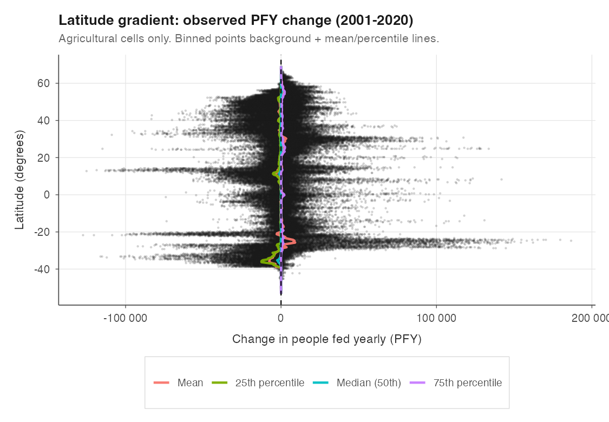
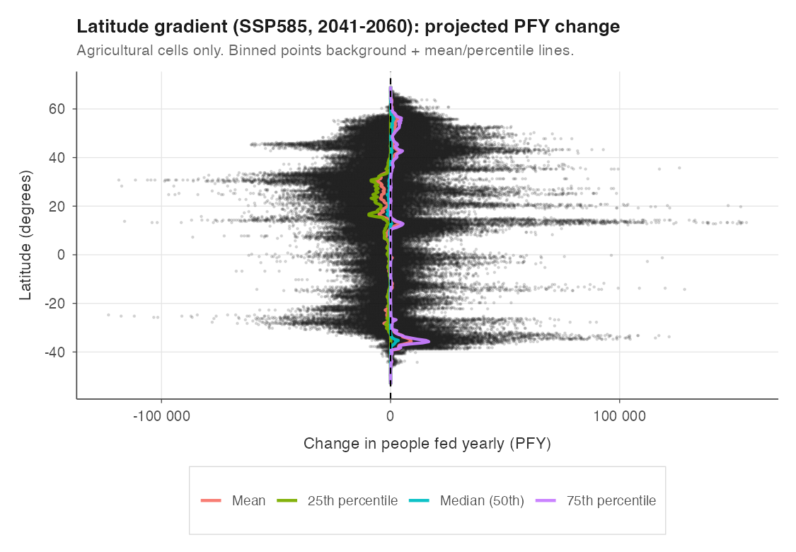